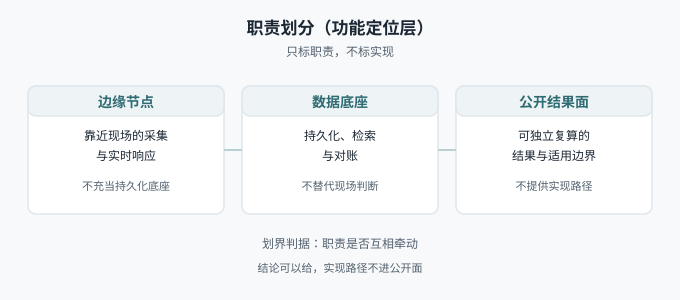

CASE 001 · 数据分层与边界划分
社区案例分享 · 工程复盘 · 不是技术方案发布
本篇只讲边界与功能定位，不谈层内实现。读者无需借助其他材料即可读完；所述判断均带适用条件，不作无限外推。
一、这篇要解决什么
一个系统里同时有边缘侧的实时处理、数据侧的持久化与检索、以及对外公开的结果数字。三者职责如果不划清，改动会互相牵动，公开结果也难以被独立复核。
本篇复盘的是「怎么划界」，不是「怎么实现」：三层各管什么、彼此之间不互相冒充什么、以及公开面只留哪一类信息。
二、职责边界（功能定位层）
| 部分 | 承担的职责 | 不承担 |
|---|---|---|
| 边缘节点 | 靠近现场的采集与实时响应 | 不充当持久化与全局检索的底座 |
| 数据底座 | 持久化、检索与对账 | 不替代现场的实时判断 |
| 公开结果面 | 可被独立复算的结果数字与适用边界 | 不提供实现路径与中间曲线 |
表中只描述职责分工，不含任何实现结构、参数或调用关系。

三、三类边界各自的问题域
3.1 分层边界
划界的判据是「职责是否互相牵动」，而不是「模块放在哪里」。边界清晰之后，任一侧的调整都不需要改动另一侧的对外口径。
3.2 许可证边界
开源组件组合使用时，需要先识别各自的许可证边界，避免被绑成一体。不同许可证之间的兼容性结论需经法律复核，本篇不作定论、不构成法律意见，也不构成选型建议。
涉及第三方项目时只转述其公开特性，版本与分叉形态不作定论，以该项目官方文档为准。
3.3 存证边界
检索对账与锚定各自承担不同职责，两者不互相冒充。对公开的代码、模型与仿真结果采用哈希值固定与可信时间戳记录，便于核对内容完整性与贡献来源；该记录仅用于追溯与对账，不替代权利归属认定。
相关归属与权益分配以贡献者协议及适用法律为准。
四、公开面的自证路径
公开的结果数字，由独立的断言脚本判定；任何人都可以复算一遍，退出码为零是唯一验收判据。结论可以给，实现路径不进公开面。
- 可共享：职责划分、适用边界、结果级数字；
- 不共享：实现路径、精确参数、真实工况数据、可反推核心参数的中间曲线。
五、适用边界声明
本篇为社区案例分享，属工程复盘，不是技术方案发布，不是实施规范，不构成实施建议。
文中结论均为在设定包络盒内、给定工况下的定性判断，不作无限外推；仿真结论不替代台架试验与海上试验，任何工程采用均需独立完成相应验证。成本口径一律为相对量级、待询价。
引用本篇时，请保留「社区案例分享」标注与本节适用边界声明，勿摘取单句作性能或合规背书。